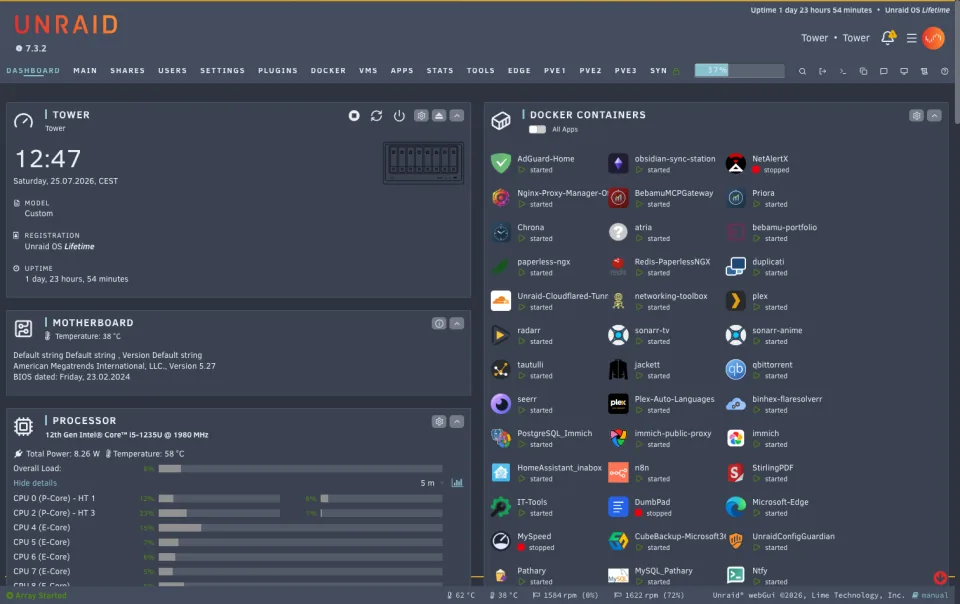
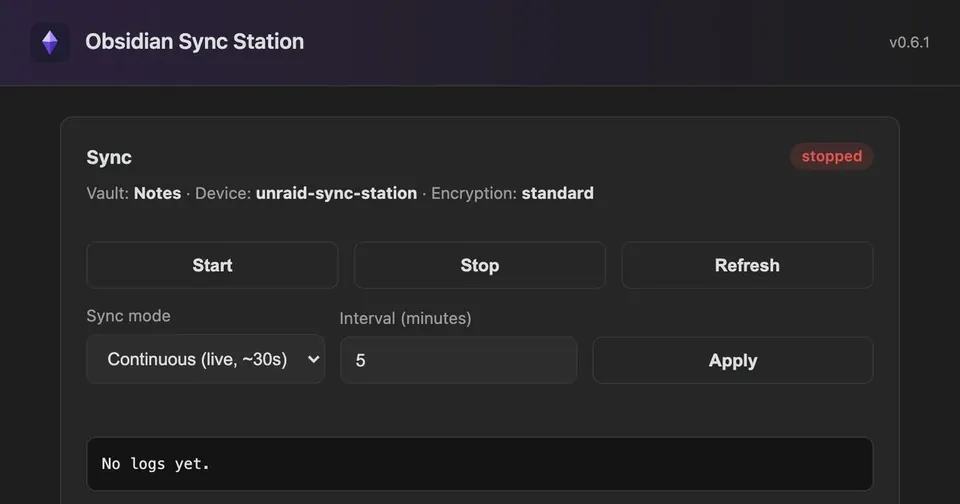
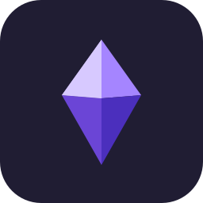
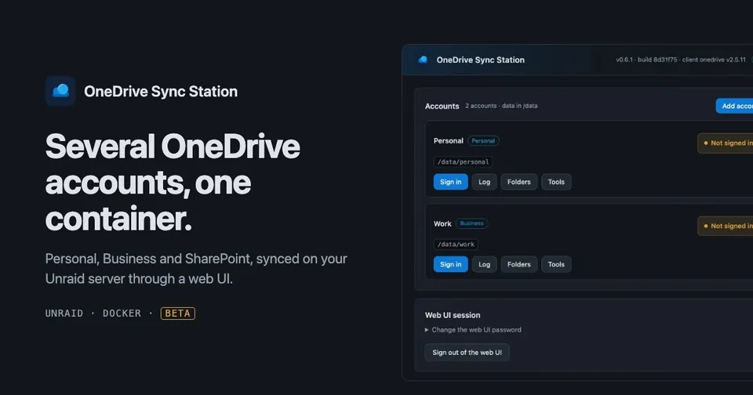
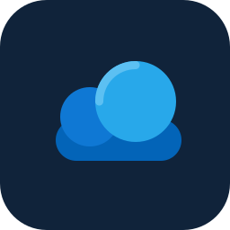

Unraid plugins and Docker containers
Apps I build for Unraid.
A theming plugin for the webGUI and two sync containers with a web UI. All of them are open source, listed in Community Applications, and run on my own Unraid server first.
-

Unraid Themer Plugin
Restyles the Unraid 7 webGUI: twenty themes in a built-in store, a theme builder, nine open-source icon sets, custom logo and background. Non-destructive: switch it off and the webGUI is stock again.
In Apps: Unraid Themer · Unraid Themer Beta
-


Obsidian Sync Station DockerKeeps an Obsidian vault synced on the server with Obsidian's official headless Sync client, managed from a web UI. Optional local backups, restic off-site copies and ntfy notifications.
In Apps: obsidian-sync-station · obsidian-sync-station-beta
-


OneDrive Sync Station DockerSyncs several OneDrive Personal, OneDrive Business and SharePoint accounts in one container, each with its own folder, settings and sign-in. Built on the OneDrive Client for Linux by abraunegg.
In Apps: onedrive-sync-station · onedrive-sync-station-beta
Templates
Templates for apps by other publishers.
Community Applications templates I maintain for images I did not build. They follow the publisher's stable tag and have no beta entry.
- n8n Sandbox API and n8n Sandbox Runner: the self-hosted code sandbox for the n8n Assistant and n8n Agents, only useful next to an existing n8n container. The API creates the mTLS certificates, the runner is a privileged Docker-in-Docker container. Images and source by n8n: n8n-io/n8n-sandbox-service.
Channels
Release and beta.
Every app has two entries in Community Applications. The release entry is for daily use. The beta entry, shown with the BETA banner, carries pre-release builds for testing; every change goes there first and is released after it has run on my server.
- Docker apps: the release entry uses the
:latestimage, the beta entry:beta. The beta templates default to their own port and their own paths, so both can run side by side. Never point them at the same config or data path. - Unraid Themer: both entries install the same plugin, so one replaces the other. Settings, themes, icons and logo carry over, and updates come from the channel installed last.